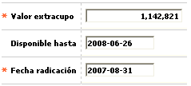

Novedad extracupo
Este formulario invocado desde la opción ingreso de novedades, (issuer) le permite a la entidad asignar o modificar un cupo extra adicional o transitorio para ser utilizado por el tarjetahabiente dentro de un plazo determinado. Puede ser una herramienta útil por ejemplo para incentivar el uso de la tarjeta en épocas o eventos especiales como navidad, amor y amistad, regreso al colegio, etc.

Descripción de campos
Valor extracupo |
En este campo numérico de hasta 14 enteros y 2 decimales, obligatorio, se registra el monto adicional autorizado para el crédito o tarjeta. |
Disponible hasta |
Campo en formato YYYY-MM-DD en el que se registra la fecha hasta la cual el tarjetahabiente puede hacer uso del extracupo autorizado. |
Fecha de radicación |
Campo obligatorio en el que se registra en formato YYYY-MM-DD la fecha en la cual se generó el extrcupo para la tarjeta y que puede ser una fecha anterior a la actual del sistema, facilitando el ingreso de novedades de fechas anteriores. |